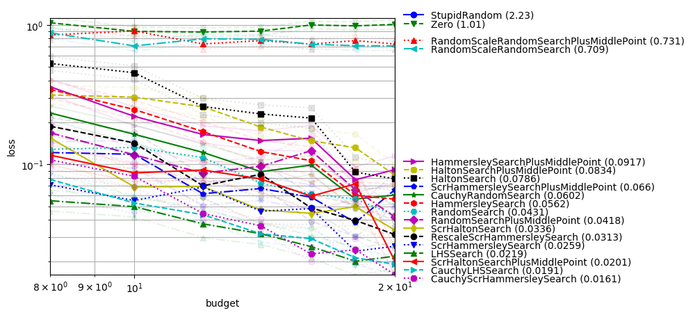
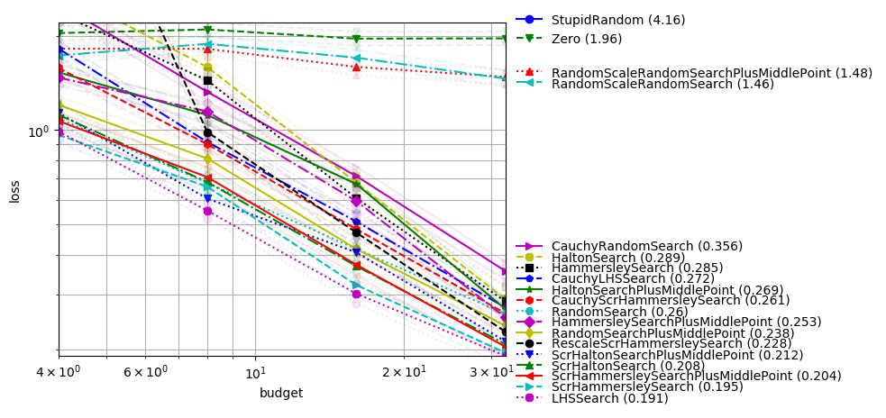
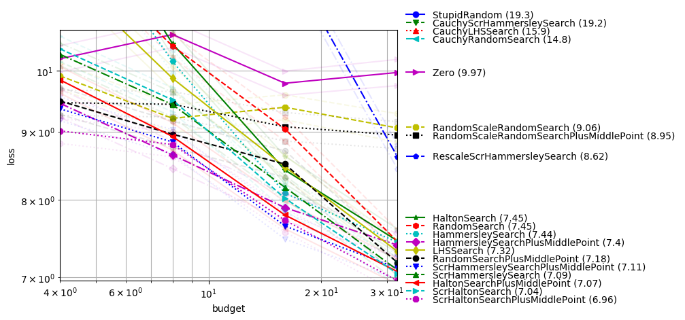
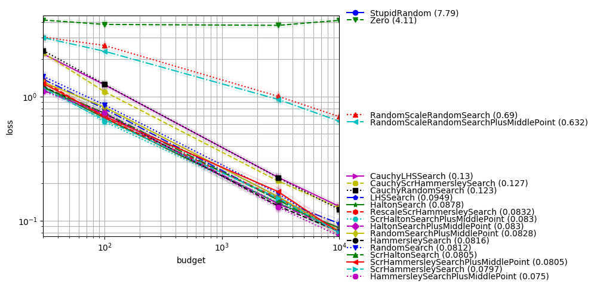

Examples of benchmarks
The following figures are examples of algorithm benchmarks which can be generated very easily from the platform In all examples, we use independent experiments for the different x-values; so that consistent rankings between methods, over several x-values, have a statistical meaning.
If you want to run the examples yourself, please make sure you have installed nevergrad with the benchmark flag (see here).
Noisy optimization
Created with command:
python -m nevergrad.benchmark noise --seed=12 --repetitions=10 --plot
Here the variance of the noise does not vanish near the optimum. TBPSA uses the noise management principles of pcCMSA-ES reaching fast convergence rates. We here compare it to a sample of our algorithms; but it performed very well also compared to many other methods.

One-shot optimization
In dimension-11 with one feature
Created with command:
python -m nevergrad.benchmark dim10_select_one_feature --seed=12 --repetitions=400 --plot
One-shot optimization is the case in which all evaluations should be done in parallel; the optimization algorithm can only decide, once and for all, which points are going to be evaluated. We consider here:
an optimum which is translated by a standard centered Gaussian;
1 useful variable and 10 useless variables (this is a feature selection context as in https://arxiv.org/abs/1706.03200);
the sphere function (restricted to the useful variable);
We see that:
Quasirandom without scrambling is suboptimal;
Cauchy sampling helps a lot (though the optimum is normally drawn!), in this feature selection context;
LHS performs equivalently to low discrepancy (which can be related to the fact that only one feature matters).

In dimension-12 with two features
We reproduce this experiment but with 2 useful variables:
python -m nevergrad.benchmark dim10_select_two_features --seed=12 --repetitions=400 --plot
LHS still performs very well, as well as scrambled methods; Cauchy is not that useful anymore.

In dimension-10 with small budget
With all variables useful, the situation becomes different; Cauchy is harmful. Scrambling is still very necessary. LHS (vanilla), which does not couple variables, is weak.
python -m nevergrad.benchmark dim10_smallbudget --seed=12 --repetitions=400 --plot

In dimension-4
In moderate dimension, scrambling is less necessary (consistently with theory) and LHS becomes weaker as budget increases (consistently with discrepancy results in https://arxiv.org/abs/1707.08481). The following plot was created with command:
python -m nevergrad.benchmark doe_dim4 --seed=12 --repetitions=400 --plot

Comparison-based methods for ill-conditioned problems
In this setting (rotated or not, ill-conditioned) we get excellent results with:
CMA, best on the Cigar and rotated ellipsoid;
DE and PSO when there is no rotation;
Almost rotationally invariant variants of DE in the rotated case (CR should not be exactly equal to 1, otherwise we stay in the vector space generated by the initial population; this confirms results and explanation in http://users.cecs.anu.edu.au/~ejmontgomery/publications/2010-07_de_cr_moves.pdf);
python -m nevergrad.benchmark compabasedillcond --seed=12 --repetitions=400 --plot

Ill-conditioned function
SQP (which won the BBComp GECCO 2015 contest) performs great in the quadratic case, consistently with theory and intuition:
python -m nevergrad.benchmark illcond --seed=12 --repetitions=50 --plot

Discrete
The platform can also deal with discrete objective functions! We can both consider discrete domains handled through softmax or through discretization of continuous variables.
python -m nevergrad.benchmark discrete --seed=12 --repetitions=10 --plot
We note that FastGA performs best. DoubleFastGA corresponds to a mutation rate ranging between 1/dim and (dim-1)/dim instead of 1/dim and 1/2; this is because the original range corresponds to a binary domain whereas we consider arbitrary domains. The simple uniform mixing of mutation rates (https://arxiv.org/abs/1606.05551) performs well in several cases.


List of benchmarks
You can find a list of currently available benchmarks below. Most are not well-documented, please open an issue when you need more information and we’ll update the documentation on demand ;)